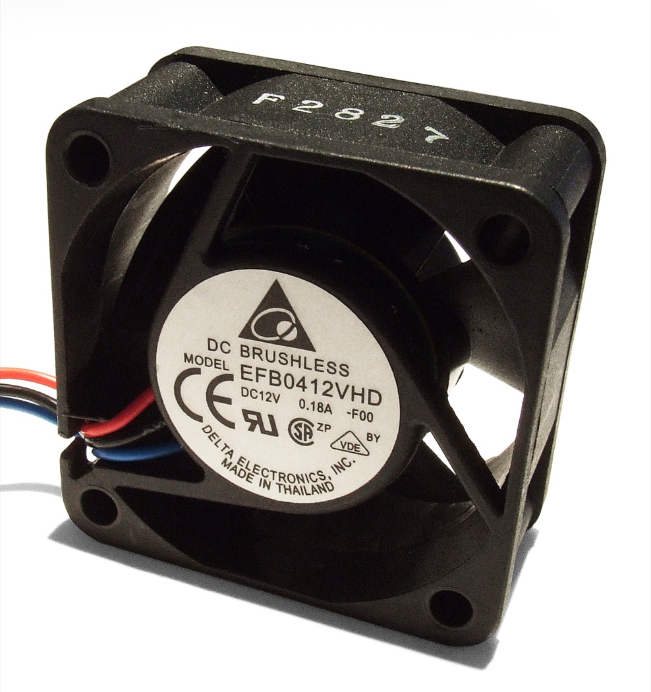
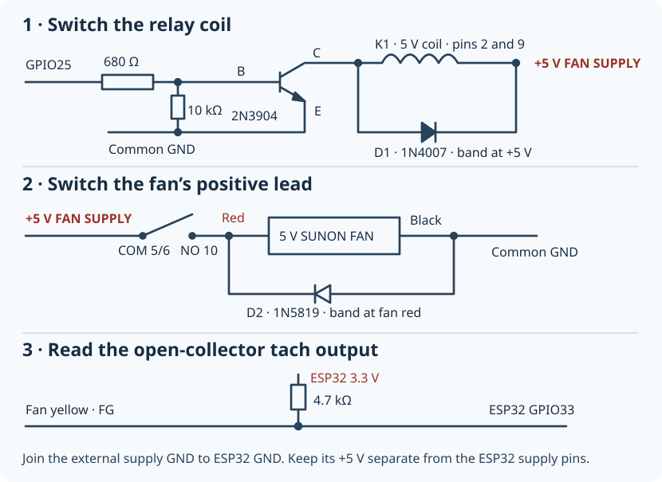

Build a guarded 5 V fan with rotation proof
Add a real fan to your mini building-management panel. The green light shows the ESP32 issued a command. The yellow light comes on when it measures pulses from the rotating fan.



Watch how a separate tachometer wire sends speed feedback. This build runs the fan at full supply voltage when the relay closes. DigiKey · Sunon fans and tachometer feedback.
Collect parts and tools
Reuse the ESP32 panel, dial, door switch and lamps from P189. The fan was listed at about ₹641 in India and A$10.95 including GST in Australia. Check delivery charges before buying just one part. The guarded unit uses a separate 5 V supply and the two supplies share a ground.
| Quantity and part | Specification | Sources |
|---|---|---|
| 1 · Fan View photo | Sunon MF40100V1-1000U-G99, 5 V DC, 40 × 40 × 10 mm, 136 mA nominal. Yellow is the open-collector FG tach signal. Verify the full suffix and the red, black and yellow leads. | DigiKey India · DigiKey Australia · Sunon specification and dimensions |
| 2 · 40 mm finger guards View guard | Same Sky FG40-32, 32 mm hole pitch. Four M4 machine screws, washers and nuts. Measure the stack to choose 25–30 mm screws and check the ends clear the blades. Use a roughly 80 × 90 × 3 mm sheet for the panel and a small base to keep it upright. | DigiKey India · FG40-32 · DigiKey Australia · FG40-32 · Same Sky · Product photo and dimensions |
| 1 · 5 V relay View coil and contacts | G5V-1 DC5, Omron or Aratas, SPDT, 167 Ω coil, 30 mA nominal. Solder to a small piece of 2.54 mm pad-per-hole board. The photo shows how a different relay works inside. | DigiKey India · DigiKey Australia · David Boettcher · public-domain photo, resized |
| 1 · Driver and clamp set View transistor | One 2N3904, one 680 Ω, one 10 kΩ and one 4.7 kΩ resistor, all ≥¼ W. One 1N4007 and one axial 1N5819. Add 22–24 AWG insulated wire and a 3-pole terminal for fan red, black and yellow. | P182 · transistor, diode and resistor suppliers · element14 India · 1N5819 · element14 Australia · 1N5819 · Windell Oskay · CC BY 2.0 |
| 1 · External 5 V source View bench supply | Start with a regulated bench supply at 5.00 V and a 0.5 A current limit. For a portable demo, use a protected 5 V USB supply with a labelled DC breakout and an inline 500 mA fuse at the positive output. Keep the ESP32 on its own USB cable. | P01 · Bench source and tools · P03 · Meter · Derrick Parker · CC0, resized |


Bring a ruler, marker, small drill and 4.5 mm bit, a hole saw or coping saw for the air opening, a deburring file, screwdriver and spanner. Use the iron, solder and clip leads from the door-indicator build. View iron and joint Bill Earl · CC BY-SA 3.0, resized · P188 · Soldering tools and continuity checks.

1 · Mount the guarded fan
- Mark the fan centre on the panel. Mark four mounting points 16 mm horizontally and vertically from that centre, forming a 32 mm square. Transfer the marks from the actual frame to confirm before drilling.
- Cut a roughly 36 mm opening on the centre mark. Drill four 4.5 mm mounting holes and file the edges. If using a pilot bit, clamp the panel to a scrap backer before drilling.
- Fasten a guard on each accessible side, with the frame arrows pointing toward the outlet. Clamp the panel to a base or stand. Keep the cable outside the swept area and secure it to the panel. With power off, verify that the screw ends and guards clear the blades. Follow the fan drawing’s tightening limit.
2 · Wire and test the relay before fitting the fan


- Look at the G5V-1 with its pins toward you and the case mark on the left. On the solder side, the pins across the top are 1, 2 and 5. Across the bottom they are 10, 9 and 6. Put the left pair two pitches apart across the rows, leaving one hole between them, the next pair one column to its right, and the right pair three more columns to the right. Mark these six pads before soldering. With power off, check about 167 Ω between pins 2 and 9 and continuity from 5 or 6 to pin 1. Pin 10 is normally open. G5V-1 bottom view and contact diagram.
- Solder relay pins 2 and 9 to two separate insulated leads. Put pin 2 on external +5 V and pin 9 on the 2N3904 collector. Put the 1N4007 directly across these points with its band at +5 V. The diode gives the coil current a path when the transistor switches off. P109 · Measure a relay coil and its flyback pulse.
- Put the 2N3904 emitter at common GND. Connect its base to GND through 10 kΩ and to a loose test jumper through 680 Ω. The latter will eventually go to GPIO25. Leave COM and NO disconnected from power for the first test.
- With the fan off the circuit, power the ESP32 and turn on the separate current-limited 5 V supply. Put the loose jumper at GND, then at the ESP32 3V3 rail. The relay should release and then click. With the meter in continuity mode across the isolated COM (pin 5 or 6) and NO (pin 10), check that only the high command closes the contact. With meter on DC volts and black at GND, the collector should be near 5 V when off and below 0.3 V when on.
- Switch off both supplies. Connect COM to the external +5 V and NO to fan red. Fan black goes to common GND. Put the 1N5819 across fan red and black with its band at fan red. Insulate the unused NC pin and anchor the leads. Once contacts are connected to the supply, use voltage mode for powered checks.
3 · Move from a manual proof switch to measured rotation
- With both supplies disconnected, move the loose 680 Ω jumper to the same GPIO25 strip as the green lamp input, a5 in the P189 layout. Remove the old proof switch from b33. Land the yellow fan lead and one end of 4.7 kΩ in separate free holes on strip 33, with GPIO33 still at a33. Put the other end of the resistor on the ESP32 3.3 V rail. The pull-up sets the high level. The fan’s output transistor pulls the same line down in pulses. P186 · Learn how an open-collector output works.
- Open P189’s sketch files and change
constexpr bool useFanTach = false;toconstexpr bool useFanTach = true;. Leave the dial, door, reset and lamps wired. Upload with the external supply off and set Serial Monitor to 115200 baud. The header now ends intach_Hz. mini-bms.ino · ventilation.h. - Start with the door shut and the dial at or below 23 °C. Apply 5 V. Verify green and yellow are dark and frequency is zero. Raise the dial through 25 °C. The green light comes on, the relay drives the fan, and the yellow light comes on once the ESP32 counts enough falling edges. At full speed expect roughly 200–270 Hz in free air from 7,000 RPM at two pulses per revolution, allowing the rated speed tolerance. The trainer accepts 100–350 Hz as its running range.
4 · Diagnose a missing signal and prove the interlock
| Your test | Expected | Where to look if it differs |
|---|---|---|
| Request a run with the door shut | Green on. Fan red to black reads near 5 V once the relay pulls in. Yellow follows rotation. | Check +5 V at COM, then voltage at NO. A low COM reading points to the supply, fuse or power lead. A normal COM reading and low NO reading point to the relay or its terminals. |
| Switch off both supplies and remove the yellow lead. Restart and request a run. | Fan runs briefly with yellow off. After about 8 s green goes off and red lights for missing_proof. | With the lead removed, GPIO33 should sit near 3.3 V. Restore the lead with both supplies off. A fixed level during rotation points to the FG wire, fan suffix or pull-up. |
| With a healthy run, turn off the external 5 V supply while keeping the ESP32 powered. | Proof disappears and the command stops with lost_proof. | Compare commanded state, measured fan voltage and the tach reading in Serial Monitor. Lower the dial and press reset once proof is off. |
| Restore power and run, then open the door. | Green goes off, red indicates the open door and yellow drops when rotation slows. It should clear within 3 s. | If there is 5 V at the fan red lead after command goes off, check the contact used and verify coil release. |
Verify air movement separately by holding a paper strip clear of the outlet guard. The tachometer tells you the rotor is turning. In a duct, a pressure or airflow switch can report whether useful air actually moves. Save your own readings and timestamps from the four tests. The tables give design expectations and the photos show examples. P79 · Prove fan operation in a building system.
P63 · Trace a building point from field wiring to the display P191 · Build a door input that can identify wiring faults